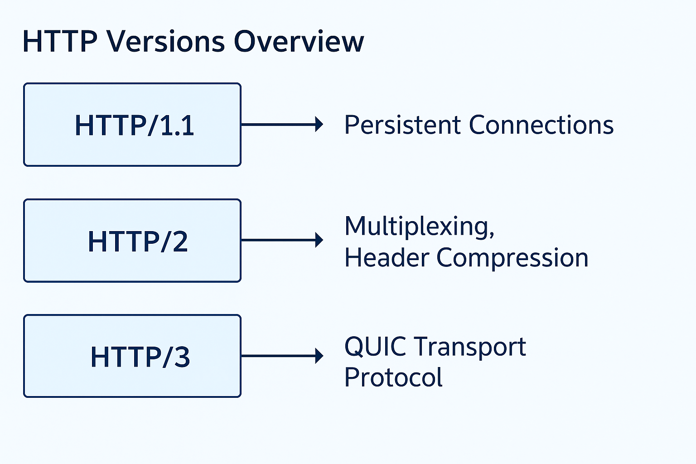

Introduction
HTTP is the web’s application-layer “lingua franca.” Its semantics — methods (GET/POST), status codes, headers, and URIs — stay consistent across versions, while transport details evolved to improve speed, reliability, and security across sites, apps, APIs, and IoT.
In 2022 the IETF clarified the family by separating common semantics (RFC 9110) from transport mappings (HTTP/1.1 in RFC 9112, HTTP/2 in RFC 9113, HTTP/3 in RFC 9114). That preserves continuity while enabling iteration beneath the application contract.
Abstract
This site explains how HTTP evolved from early one‑shot transfers to multiplexed framing and QUIC‑powered transport, keeping semantics stable while improving performance and resilience.
